Busy Bodies builds a weekly workout plan around your goals, schedule and equipment, tracks what you eat, drink and sleep, and gives you an AI coach that knows your history. Everything is designed for short, realistic workouts that fit around family life.
1. Getting started
Open the app, tell it about yourself, and it builds your first plan.
Open the app
Go to tdesmond12.github.io/busy-bodies on your phone.
Install it like an app (recommended): in Safari tap Share → Add to Home Screen; in Chrome tap ⋮ → Install app. It opens full screen and works offline for most things.
After an update, fully close the app (swipe it away) and reopen it to get the newest version.
Sign in (recommended)
Tap the name badge in the top-right corner, then Sign in with Google. Signing in saves everything to your account so it's on every device, and it turns on the AI coach, meal photos and TV mode. Without signing in, the app still works but saves only in that browser.
Set up your profile
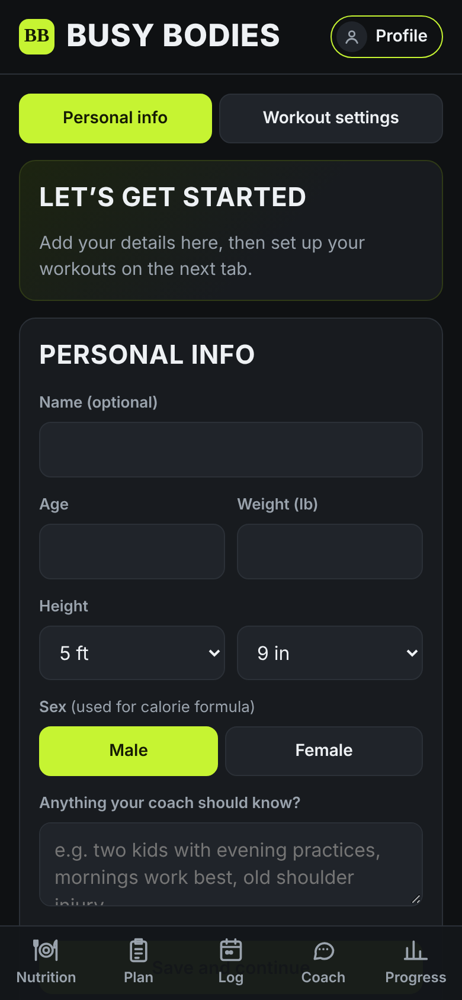
Profile → Personal info
Personal info: age, height, weight and sex (used for calorie and protein targets), plus anything the coach should know.
Workout settings: days per week, minutes per workout, experience level, your goals (pick several and choose a main focus), the equipment you have and the cardio you like.
Save, and your weekly plan appears on the Plan tab. Change these settings any time and the plan updates.
The five tabs at the bottom are Nutrition, Plan, Log, Coach and Progress. Your profile is always in the top-right corner.
2. Your plan
The Plan tab shows today first, then the rest of your week.
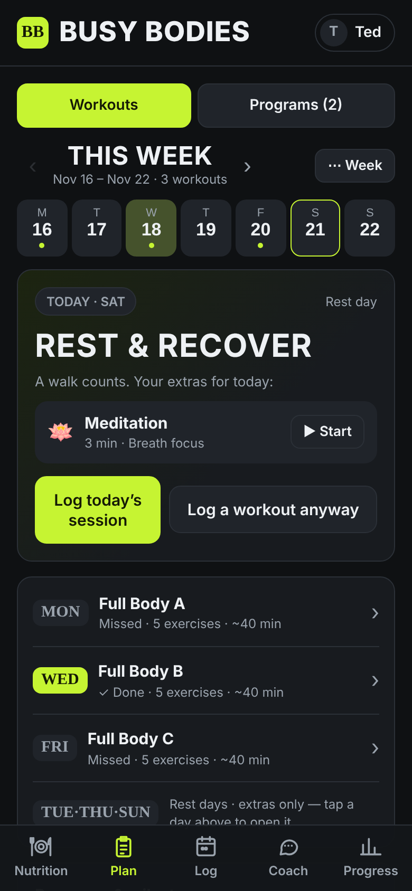
Plan: week strip and Today card
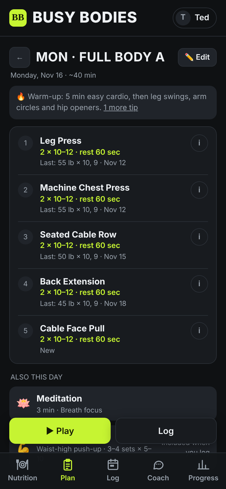
Tap a day to see its workout
The week view
‹ › switch between This week and Next week.
The 7-day strip: a dot marks a workout day, green means done, and today is outlined. Tap any day to open it.
Today card: today's workout with ▶ Play workout, Log and View. On rest days it shows your extras, like meditation.
Other days are listed one per line (✓ Done, Missed or upcoming). Programs & milestones opens the Programs tab.
A day's workout
Each exercise shows sets × reps, rest time and your last result (for example, Last: 40 lb × 10, 9).
Tap i for how to do the exercise. Warm-up and tips are in the bar at the top; tap it for more.
Milestone and program practice is added automatically when you log. Meditation and yoga have their own Start buttons.
Editing
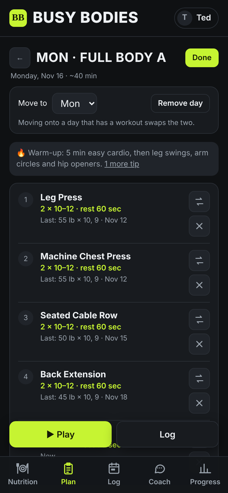
✏️ Edit mode
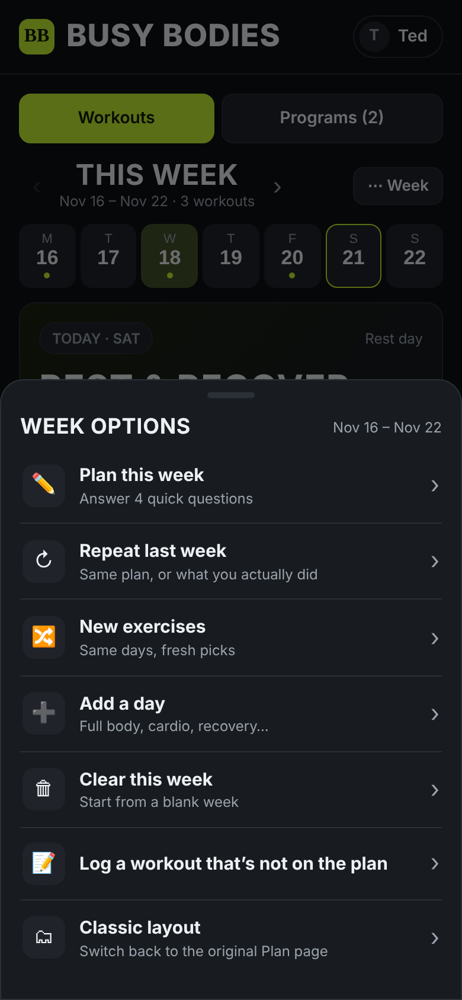
⋯ Week options
Open a day and tap ✏️ Edit to swap (↻) or remove (✕) exercises, add one, move the workout to another day (it swaps if that day is taken), or remove the day.
⋯ Week opens the week menu: Plan this week, Repeat last week, New exercises, Add a day, Clear this week, Use my regular plan, Log a workout that's not on the plan, and Classic layout.
Planning a specific week
Your regular plan repeats every week. To change just one week:
Plan this week: answer four questions (how many days, which days, what kind of workouts, how long and how hard). Choose Easy week for busy or tired weeks.
Repeat last week: copy last week's plan, or rebuild it from what you actually logged.
Clear this week: start blank and add your own days.
Use my regular plan undoes a custom week.
Next week shows your regular plan until you customize it. You can only log workouts for this week.
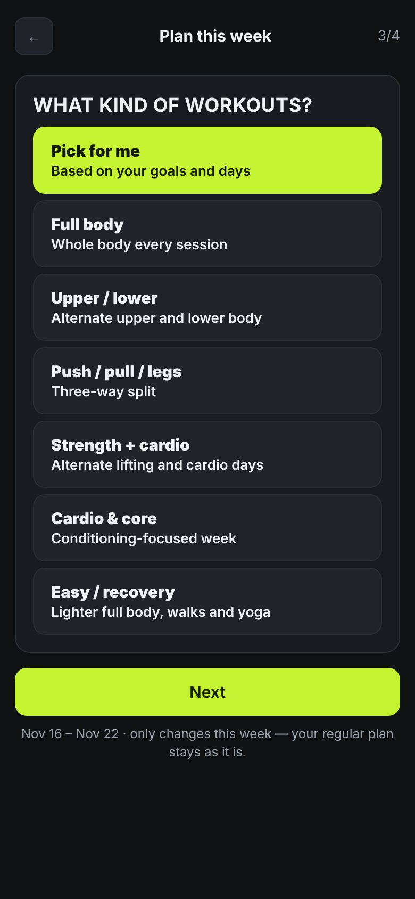
Plan this week
3. Logging a workout
Log from the Plan tab: tap Log on the Today card or at the bottom of a day.
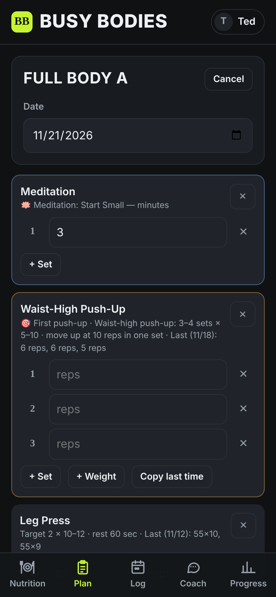
The logging screen
The day's exercises are filled in. Enter weight and reps for each set (bodyweight moves only need reps; timed moves use seconds; cardio uses minutes).
+ Weight on bodyweight exercises lets you add a vest or dumbbell.
Add or remove sets and exercises, set the date, rate your effort (1–10) and add notes, then Save workout.
Workout not on your plan? Use ⋯ Week → Log a workout that's not on the plan.
Prefer not to type at all? Use ▶ Play (next section). It fills in your sets as you go.
4. Gym mode: ▶ Play & TV
Play runs your workout full screen with timers, voice cues and quick logging, on your phone or on a TV.
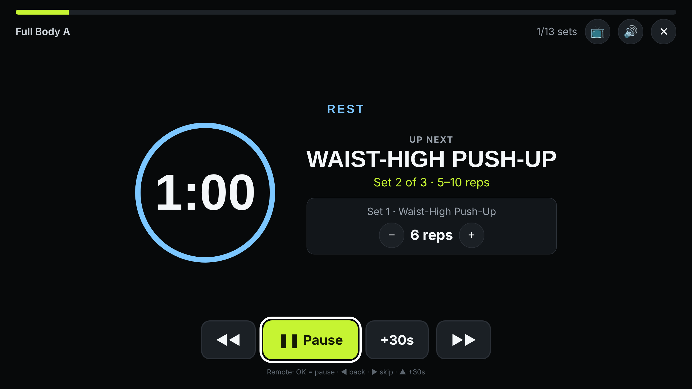
How Play works
Tap ▶ Play workout on the Today card, or ▶ Play on a day.
Warm-up countdown (skip it if you're already warm).
Each set shows the exercise, target reps, last time's weight and a form tip. Tap ✓ Done, or tap the number you actually did.
Rest counts down with 3-2-1 beeps and shows Up next. Fix the last set's reps or weight with − / +.
At the end, tap Review & save. Your sets are already filled in.
On the TV's web browser go to tdesmond12.github.io/busy-bodies/tv and press OK to turn on sound. It shows a 4-letter code. On your phone tap ▶ Play → 📺, enter the code and tap Connect. The TV shows the workout and plays the sounds, and your phone is the remote. Next time your phone reconnects automatically.
Screen mirroring
Start Play, turn your phone sideways, and AirPlay or Chromecast it to the TV.
TV browser alone
Open the app on the TV and sign in. Remote: OK done/pause, ◀ back, ▶ skip, ▲ +30s, Back end.
If the TV shows an error
"TV mode isn't switched on yet" or "needs a database update" means the one-time Firebase setup (anonymous sign-in plus database rules) hasn't been done yet.
5. Programs & milestones
Find these under Plan → Programs. Run several at once, alongside your plan.
Milestones
Step-by-step goals: First push-up (based on the Nerd Fitness guide), First pull-up, Run a mile, or a custom one from the coach (like "25 push-ups"). Each has levels. Practice is added to your workout days.
First push-up steps: wall → countertop → waist-high → knee-high (hands on a step, low bench or couch edge) → kneeling → your first full push-up. Move up after 10 clean reps in a set.
Programs
Calisthenics Foundations: push, pull, legs and core tracks, each with its own levels.
Yoga for Busy Parents: guided flows with pose pictures.
Meditation: Start Small: starts at 3 minutes a day and builds to your goal (10, 15, 20 or 30). Choose breath focus, counting, body scan, kindness or a silent timer.
Choose add to my plan or replace my plan when you start. Meditation is always added on top.
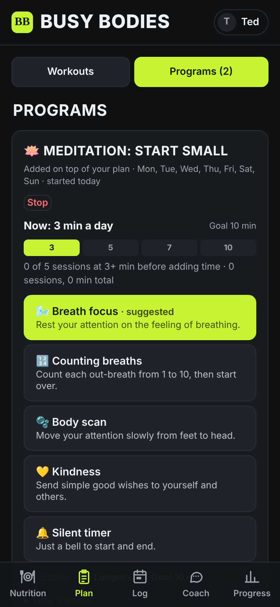
Meditation program card
On each card
📝 Log practice logs a session with the right exercise filled in. Recent practice lists your last few sessions.
When you hit a level's goal, the card asks Move up / Stay here / Ask the coach. Nothing moves up without you.
💬 Ask the coach sends your level and recent sessions for advice (stay, add reps, add sets or move up).
‹ Back a level / Skip ahead › (or Shorter / Longer for meditation) let you adjust any time.
6. Nutrition
Log food, water and supplements, and see calories, protein, carbs, sugar, fiber and fat for the day.
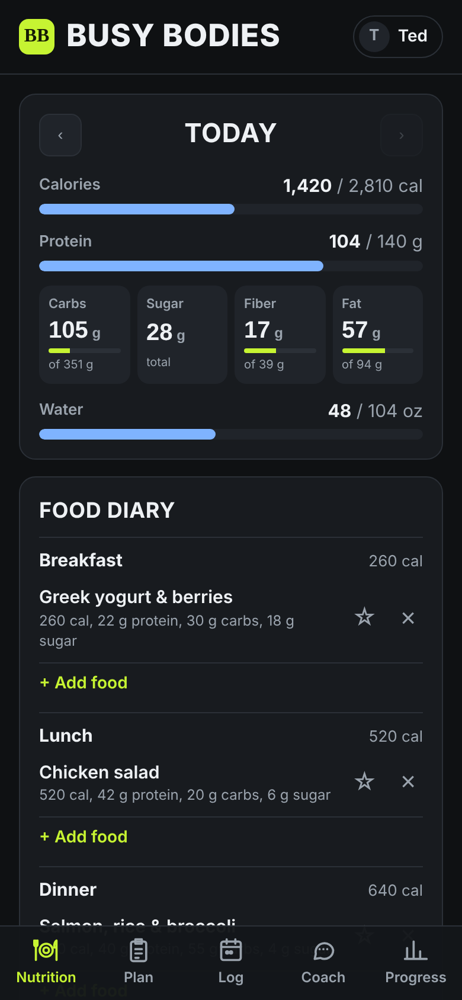
Daily totals and food diary
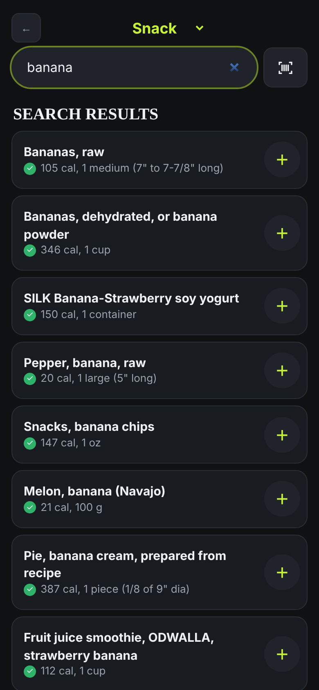
Food search
Adding food
🔍 Search foods: type a food and pick a result. It searches 7,400 built-in USDA foods instantly, plus USDA branded foods and Open Food Facts online (store brands like Trader Joe's). Choose the portion and number of servings.
Scan a barcode: point your camera at the package, or take a photo of the barcode or type its number.
📷 Snap a meal: take a photo and the AI estimates the foods and nutrition. Check it, then add it.
Enter manually: type the name and nutrition yourself.
★ Favorites and recent foods make repeat meals one tap.
Daily totals
Bars for calories and protein against your targets, then tiles for carbs, sugar, fiber and fat.
Sugar is total sugar (fruit and milk included). Older entries may not have sugar or fiber data, and the tile counts how many are missing it.
Low-carb (turned on in your profile) changes carbs to a daily limit, optionally as net carbs.
Water uses quick-add buttons toward a daily goal. Supplements is a checklist you set up once.
Use ‹ › at the top to view or fill in other days.
7. Sleep & intermittent fasting
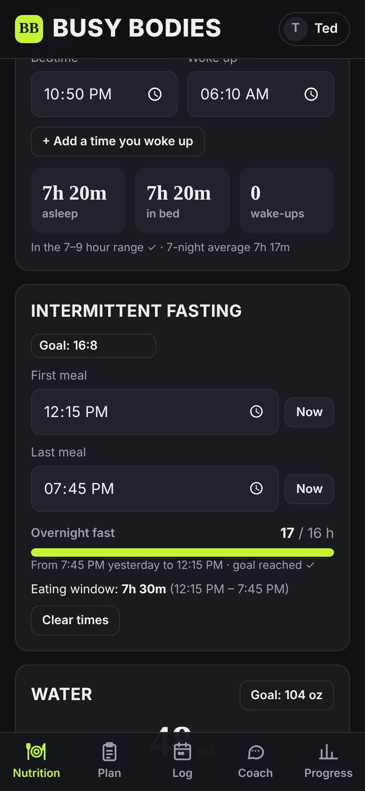
Sleep and fasting on the Nutrition tab
Sleep
On today's Nutrition page, enter last night's bedtime and this morning's wake-up.
+ Add a time you woke up for night wake-ups (how long you were awake).
It shows time asleep, time in bed, wake-ups and your 7-night average. The coach eases off after short or broken nights.
Intermittent fasting
Turn it on in Profile → Personal info → Intermittent fasting and choose a goal (12:12 up to OMAD).
Log your first meal and last meal each day. Now fills in the current time.
Your fast is counted from the previous evening's last meal to today's first meal. You'll see it against your goal, your eating window, and a live "fasting now" timer after your last meal.
The Log and Progress tabs show your fasts, streak and goal days.
8. Log (calendar)
One calendar for everything you've logged.
Dots mark days with a workout, nutrition or a milestone.
Tap a day to see its workouts (each set), nutrition totals (calories, protein, carbs, sugar, fiber, fat and water), each meal, and that day's fast.
Delete a workout logged by mistake from here.
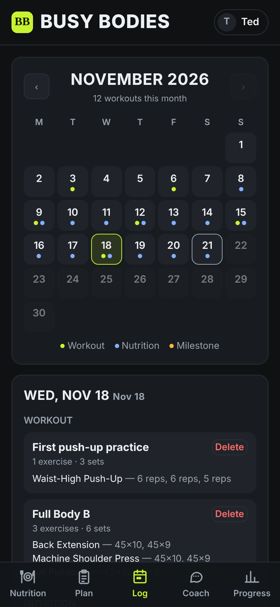
Log calendar
9. Progress
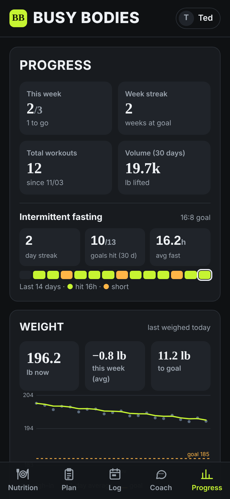
Stats and fasting
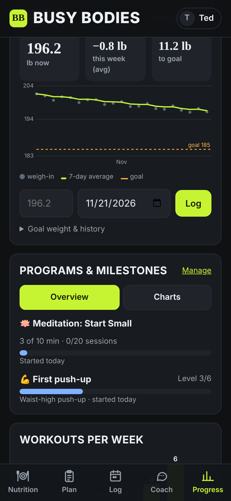
Weight trend
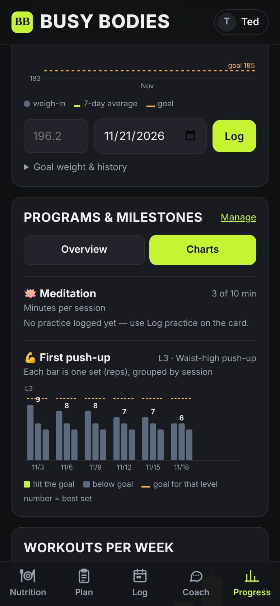
Practice charts
Top stats: workouts this week, week streak, total workouts and volume. With fasting on, you also see your streak, goal days and a 14-day strip.
Weight: log weigh-ins (any date). The green line is your 7-day average, so daily swings don't throw you off. Add a goal weight under Goal weight & history.
Programs & milestones:Overview shows levels and trophies. Charts shows every practice session (one bar per set, goal lines, level changes). Swipe left for older sessions.
Also workouts per week and your personal records.
10. AI coach
A chat coach (Google Gemini) that sees your data and can change your plan when you approve it.
What it knows
Your profile and goals, this week's plan, recent workouts and 12-week trends, nutrition today and this week, fasting, sleep, weight trend, and your programs and milestones. It also keeps private notes on what works for you.
What it can do
Swap exercises, update your profile, rebuild your plan, start or stop programs, change milestone levels and create new milestones. Each change comes with an Apply button, so nothing changes until you tap it.
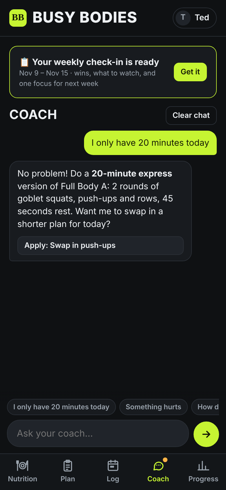
Coach with an Apply button
Weekly check-in
When last week's check-in is ready, a dot appears on the Coach tab. Tap Get it for your wins, what to watch, and one focus for next week.
The coach gives general guidance, not medical advice. Check with your doctor about medical conditions, medications, pregnancy, or before very-low-carb diets or long fasts.
11. Profile & settings
Setting
Where / what it does
Personal info
Age, height, weight, sex and notes. Drives calorie and protein targets. Your latest weigh-in updates your weight.
Workout settings
Days, minutes, level, goals and main focus, equipment, cardio, low-impact.
Low-carb diet
Keto (20 g net), strict (50 g), low-carb (100 g) or a custom limit, with optional net carbs.
Intermittent fasting
On/off and fasting goal. Shows the fasting card, tracking and coach guidance.
Backup & restore
Download all your data as a file, or restore it from one.
Reset
Redo setup (keeps your history) or Erase everything.
Plan layout
⋯ Week → Classic layout switches back to the original Plan page. A button at its top switches back.
12. Tips & troubleshooting
If…
Try this
A new feature isn't showing
Fully close the app (swipe it away) and reopen it.
The coach says it hit a usage limit
The free AI allowance resets daily. Try again later, or the owner can switch the Firebase project to pay-as-you-go.
A food isn't found
Try fewer words or the brand name, scan the barcode, or use Enter manually.
Barcode camera won't start
Allow camera access when asked, or use "take a photo" or type the number.
No sound in Play or meditation
Turn off silent mode on your phone. On a TV, press OK when the page asks to turn on sound.
The TV code isn't accepted
Check the 4 letters on the TV, make sure you're signed in on your phone, and reload the TV page.
Wrong time picked on iPhone
Scroll the time wheel, then tap Done. It saves when the picker closes.
Food data: USDA FoodData Central and Open Food Facts (ODbL). AI: Google Gemini through Firebase AI Logic.